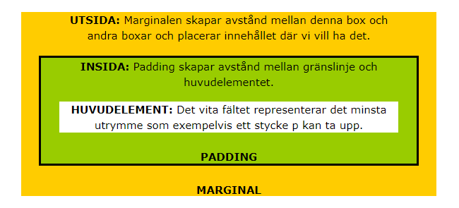

Boxmodellen och CSS-egenskaper
Alla html elemet har Boxmodell. I Css termin Boxmodell byteder en låda “box” och som anväder man att skapa och deignera layout till olika webbplatser. Boxmodell är ett sätt att beskriva html element som har fyra olika egenskapar till exempel content själv, padding, border, margin.
Content
Det är innehåller som ligger inuti I box och där ser man texter, bilder, video och mm. Man kan fixa storlek (att göra mindre och större) genom att använda bred och hjöd egenskapar.
Padding
Detta egenskapar använder man för att skapa tom rum runt omkring content. Padding egenskapen innehåller Padding-top, padding-right, padding-bottom och padding-left. Detta är trasnsparent.
Border
Detta egenskapar använder man för att skapa en kantlinjen runt content och padding. Border egenskapen består av border-style, border-width och border-color.
Margin
Detta egenskapar använder man för att skapa en tom rum mellan olika box-element. Marginal egenskapen inehåller margin-top, margin-bottom, margin-left och margin-right. Detta är trasnsparent.
Content-box och border-box
Det är stor skillnaden mellan border-box och content box när man använder de. Självklart man förstår inte på en gång och det tar ganska lång tid att lära sig vad är riktig skillnade mellan de. Css Box sizing egenskapar påverkar bara bredd och höjd, och den skillnad ser man bara man har padding och border på element.
Content-box
class ="PARAGRAPH"I Den här värden Width and height bara påverka bara på content av ett element. Den här värden inkludera ingen border och padding till exempel:
box { Width: 100px; Height:200px; Border:1px; Padding:10px;}
Width(100px) = (höger + vänster border = 2px) + (höger + vänster padding = 20px) = 122px.
Height(200px) = (upp+ner padding = 2px) + (Top + bottom border= 20px) = 222px.

Border box
I Den här värden som ta bredd och längd av ett elemnt tilsammans med content, padding och border självkart ingen margin. Border and padding är inne i låda i border-box värden till exempel
box{ Width: 100px; Height:200px; Border:1px; Padding:10px; }
Width(100px) = (höger + vänster border = 2px) + (höger + vänster padding = 20px) = 100px.
Height(200px) = (upp+ner padding = 2px) + (Top + bottom border= 20px) = 200px.